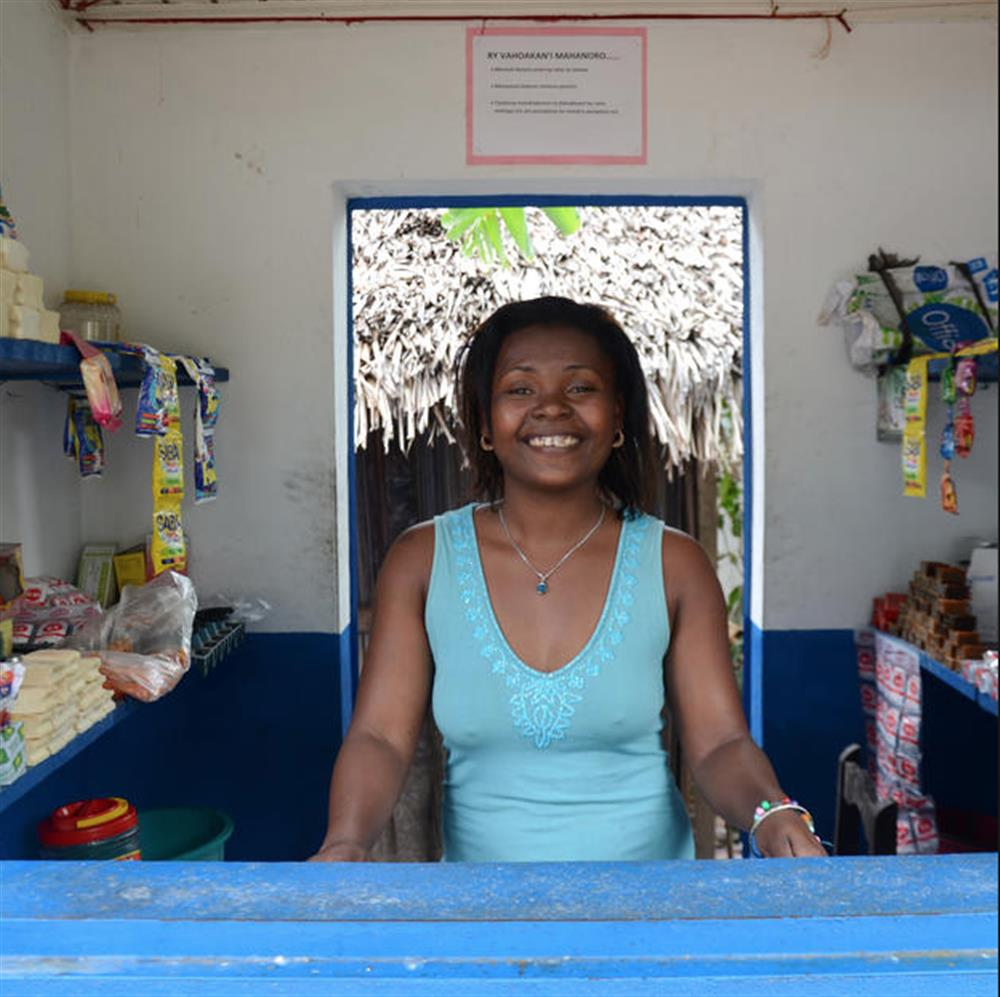

Sitraka - Merinarivo village
'I love my community and I know they need someone like me to manage the kiosk. I'm providing safe water and they're having a better, healthier life. I'm really proud of myself.'

© WaterAid/Ernest Randriarimalala
Elida at work in the water kiosk she runs in Tsarahonenana village, Madagascar.
"Elida stands behind the counter of the water kiosk she runs in Tsarahonenana village, Madagascar and smiles."She's just one of the women providing clean, safe water – and building a better future for their families – through the water kiosks we're helping communities set up in rural Madagascar.'My best moment was the first day we officially opened the kiosk, when I was selling water for the first time,' she says.'We had a little opening ceremony with some villagers – people getting water, buying things. I was really happy as everybody supported me and I was finally able to run my own business.'
READ MORE: WATER AID
SOURCE: WATER AID